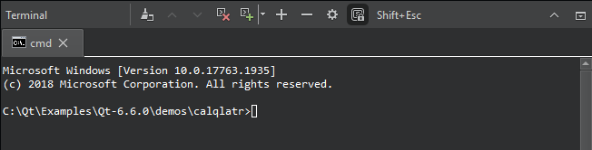
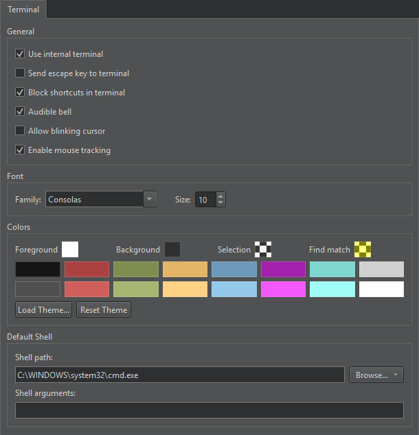

Terminal
When you select the Run in Terminal check box and run an application or the Open Terminal button to open a terminal, it opens as an output view.
To open the terminal in a separate window, go to Preferences > Terminal, and clear Use internal terminal.
On Linux and macOS, you can set the terminal to open by selecting Preferences > Environment > System.

- To clear the terminal, select (Clear).
- To close the current terminal, select .
- To open new terminals as tabs, select .
- To move between terminals, select the tabs or and .
- To select a word in a terminal, double-click it. To select the whole line, triple-click it. To select all text, select Select All in the context menu or press Ctrl+A.
- To open links in a browser, files in the editor, or folders in the Projects view, hover the mouse over them, and press Ctrl.
- To search through the output, press Ctrl+F.
- To make the font larger or smaller, select the
 and
and  buttons. You can also change the font size in terminal preferences.
buttons. You can also change the font size in terminal preferences. - To open terminal preferences, select (Configure).
- To keep Qt Creator keyboard shortcuts from interfering in the terminal, select .
Most of the Qt Creator keyboard shortcuts are disabled in the terminal, except the ones for opening terminal preferences or the locator and quitting Qt Creator. To send the escape key to the terminal instead of closing the terminal, select Shift+Esc. You can also specify that the escape key is sent to the terminal in terminal preferences.
Terminal Preferences
To set preferences for the internal terminal, select Preferences > Terminal, or select the Configure button in the Terminal pane.

| Option | Value |
|---|---|
| Use internal terminal | Open the Terminal pane when you select Run in Terminal or Open Terminal. |
| Send escape key to terminal | Send the escape key to the terminal instead of closing the terminal. |
| Block shortcuts in terminal | Keep Qt Creator keyboard shortcuts from interfering in the terminal. |
| Audible bell | Play an audible bell when the a bell character is received. |
| Allow blinking cursor | Allow the cursor to blink. |
| Enable mouse tracking | Enable mouse tracking in the terminal. |
| Font | Select the Font family and Size for the text in the terminal. You can also use the and buttons in the Terminal pane to change the font size. |
| Colors | Set colors for the Terminal pane Foreground, Background, Selection, and Find match. To use an existing color scheme, select Load Theme. To revert color changes, select Reset Theme. |
| Default shell | Set the full path to the default terminal executable in Shell path and the arguments to pass to the shell in Shell arguments. |
See also View output and Keyboard Shortcuts.